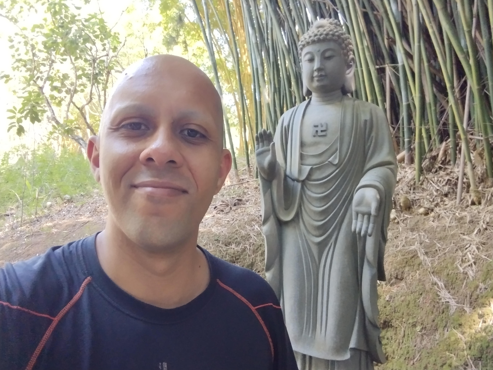
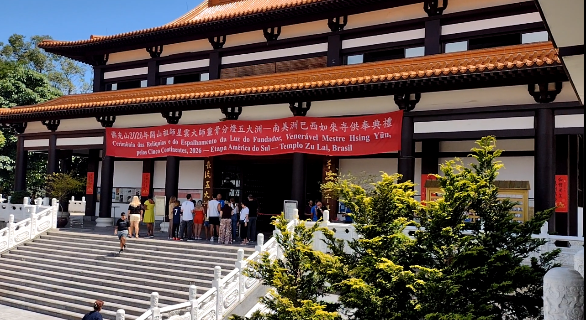
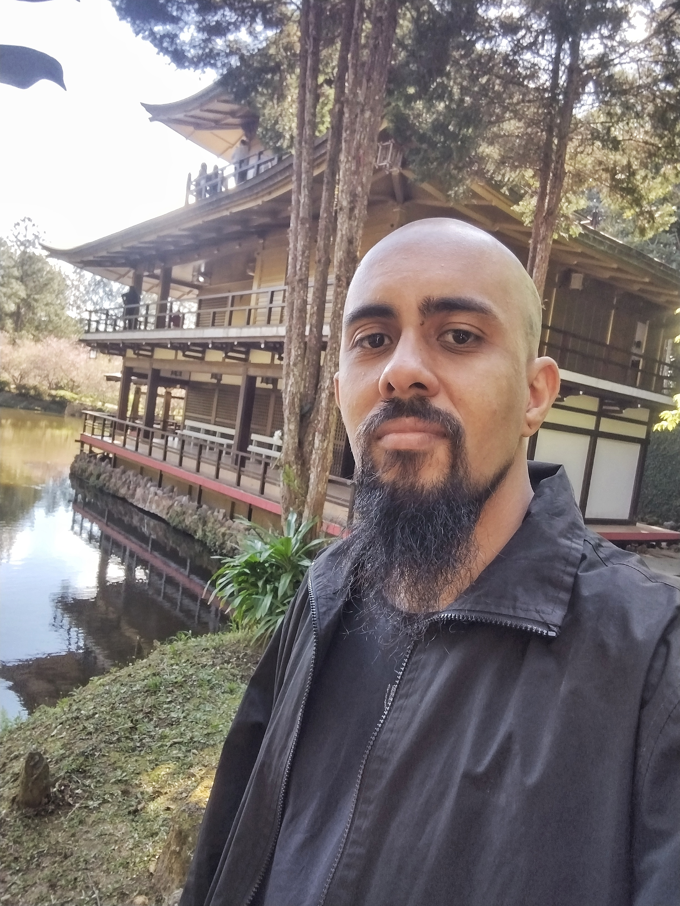
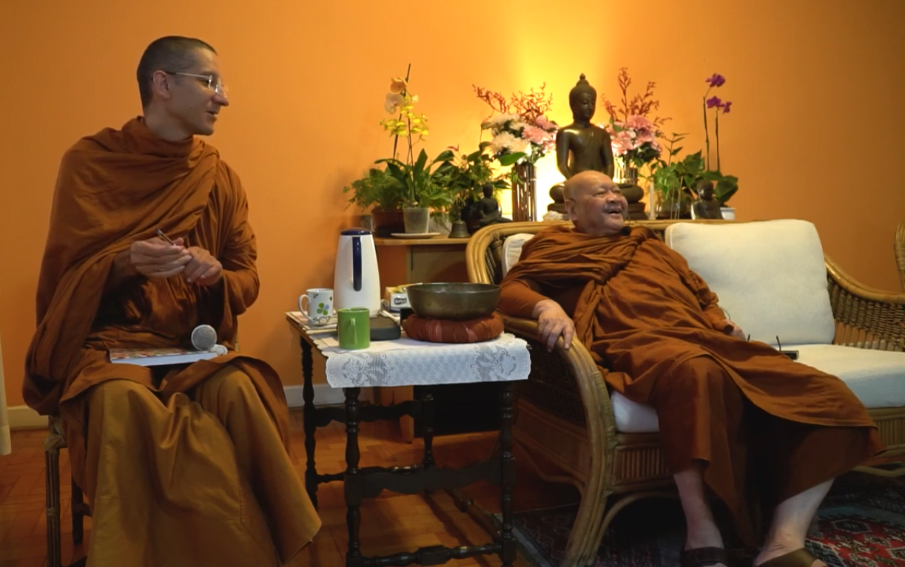
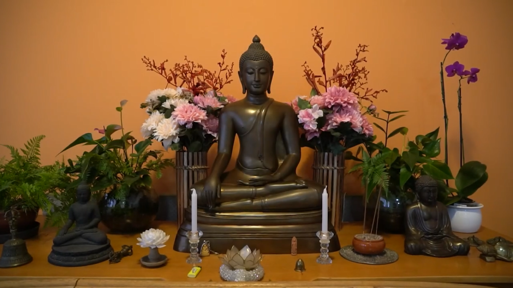
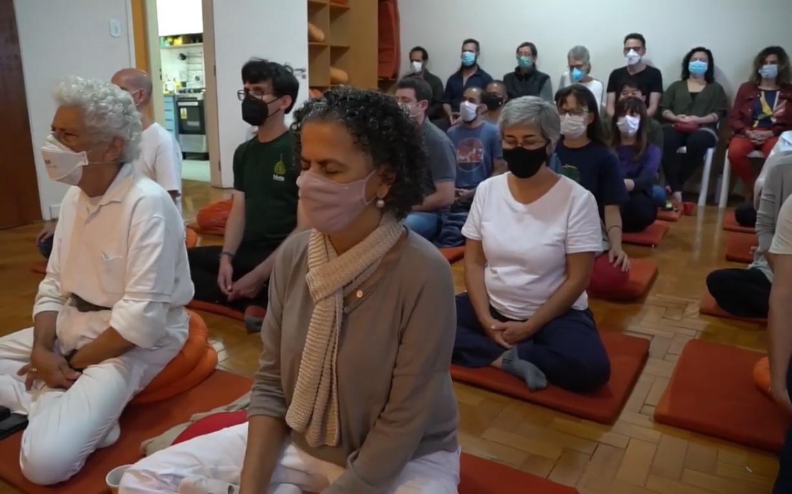
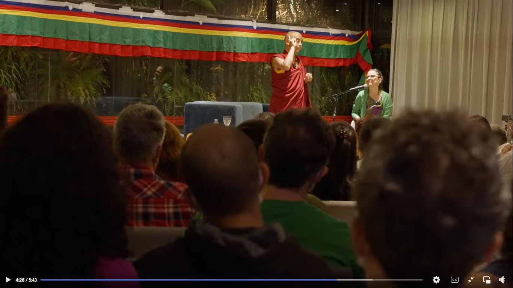
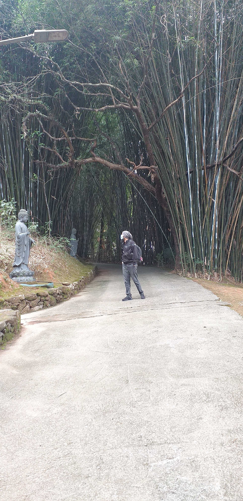

Selecione um artigo na lista ao lado para ler.
"Svākkhāto Bhagavatā dhammo, sandiṭṭhiko, akāliko, ehipassiko, opaneyyiko, paccattaṃ veditabbo viññūhīti."
"O Dhamma é bem ensinado pelo Abençoado, visível aqui e agora, atemporal, convidativo à investigação (ehipassiko), que conduz adiante, para ser vivenciado e compreendido diretamente pelos sábios.".
— Dhammanussati (Recitação das Qualidades do Dhamma)Originalmente ensinado pelo Buda no Dhajagga Sutta (SN 11.3) como um antídoto para o medo.
No coração desta recitação diária tradicional do Budismo Theravada, encontra-se a expressão ehipassiko. Mais do que uma qualidade do ensinamento, trata-se de um convite aberto feito pelo Buda para "vir e ver". Não há exigência de fé cega ou aceitação passiva de dogmas, mas sim um chamado empírico e prático à investigação. O Dharma nos instiga a testar e validar a verdade das coisas como elas são por meio da nossa própria experiência direta.
Foi exatamente esse espírito investigativo que deu origem a este espaço. Após muitos anos caminhando no budismo como praticante esporádico, senti a necessidade de aprofundar a minha prática pessoal e meus estudos do dharma. Este site é o registro vivo da minha resposta pessoal ao convite de "vir e ver".
Para documentar essa jornada contínua e compartilhar esse caminho, estruturei o site em três áreas fundamentais: Estudo, onde irei tentar registrar e estruturar o conhecimento que as leituras me trouxerem, Prática onde vou escrever artigos sobre as minhas experiências com meditação, reflexões que as leituras me trouxerem e o que mais eu achar que vale a pena que seja relacionado ao dharma, e por fim também implementei uma galeria simples com registros em foto e/ou video de locais que eu visitei.
Que este site não seja apenas o diário da minha própria jornada de investigação, mas que possa de alguma forma inspirar a sua própria prática. Fique à vontade para explorar, ler e ver por si mesmo.
Que todos os seres sejam felizes e pacíficos.
Estudando o Dhamma
A investigação direta dos ensinamentos.
[Em construção...]
[Em construção...]
[Em construção...]
O Cânone Pali ou Tipitaka é dividido em três "cestos":
- Vinaya Pitaka: Regras de conduta para monges e monjas.
- Sutta Pitaka: Os discursos e ensinamentos de Buda.
- Abhidhamma Pitaka: Análise profunda da psicologia e filosofia.
[Em construção...]
Prática
Anotações e reflexões vindas das minhas leituras ou práticas diárias.
Últimos Artigos
Galeria












